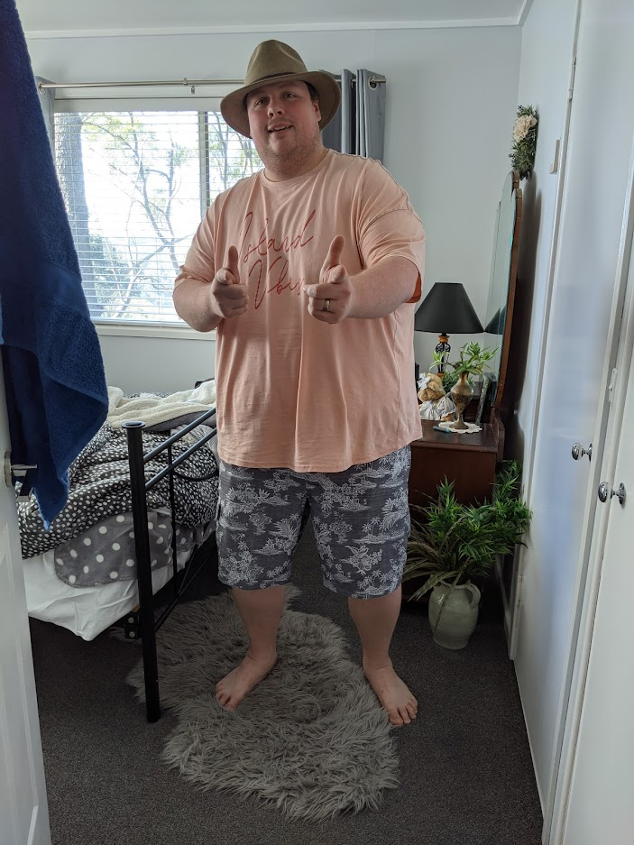

S3939981 S3939981@student.rmit.edu.au G’day! I’m Kieran. I am lucky enough to have seen a lot of this great country have lived in most parts of it. I’m a proud Australian and love to meet new people and experience new cultures especially when I travel. My wife and I spent around five weeks travelling around the Polynesian south pacific and had a little stint in New Zealand. I finished High School in Darwin, completing Year 12 in 2008 with a Certificate I and II in Cookery before switching fields and starting an apprenticeship as a butcher. In 2012 I completed a Certificate IV in meat processing at Charles Darwin University and gained my full trade ticket. From there I spent a few years in Darwin but eventually travelled around parts of Sydney, Newcastle, Toowoomba, and Brisbane working for various butcheries. In 2014 I completed a Certificate IV in Computer Systems and a Diploma of Information Technology at Tafe NSW and then returned to my butchery work until 2022 where I have now enrolled as a student at RMIT in a Bachelor of Information Technology. I’m a big board games enthusiast and love to play video games as well. I’m also heavily into TTRPG’s (tabletop roleplaying games). So much so that I have my own games room with wireless surround sound system for ambient noise, low-hung RBG mood lighting and table to seat eight. Outside of games work and technology I like to recycle furniture. Clean, strip, sand, paint, and seal preloved wooden furniture for either my own use, as gifts for friends or to sell along to fund my tool habit.
I’ve been interested in IT from a fairly early age. I would visit my grandfather who had bought himself a Pentium I, just to mess around with and play games on. I would put the five floppy disks it took to load DOOMII and play for about 20 minutes before mum would find us cackling in the back room at how bad we were at the game. Fast forward a few years and I’m well versed in computers; I studied my interest a bit at Tafe and have a pretty teched up house with AI assistants and the like throughout. I’ve always managed to find solutions to the networking side of issues, whether it be LAN problems from the split-screen, multiple Xbox, in the same house days of the late noughties. Or the novel issues of trying to make virtual LANs for friends to play games on or hosting servers for games. I’m generally the person in my friends and family group people turn to for the assistance. I chose RMIT as my University simply because they had the best offering for remote learning. It’s a forward-thinking university with courses and tutorials that reflect that. It helps that’s its fairly well rated among Australian universities as well. I expect to learn a broad sense of what IT is, its interaction with existing systems and organisations. The impact Information Technology has on real world scenarios and its evolution in the future. Along with a fair amount of google skills and a whole bunch of programming.